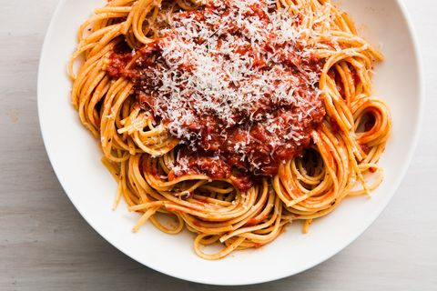
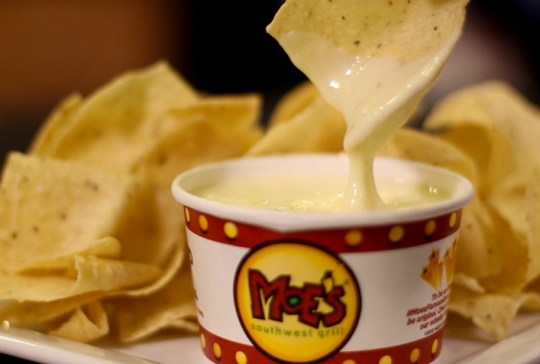
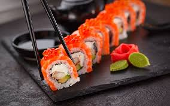
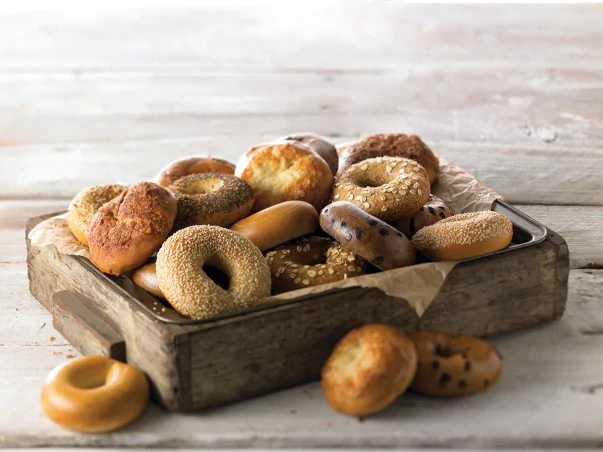
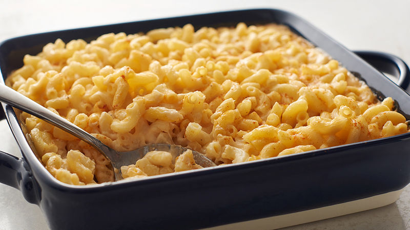
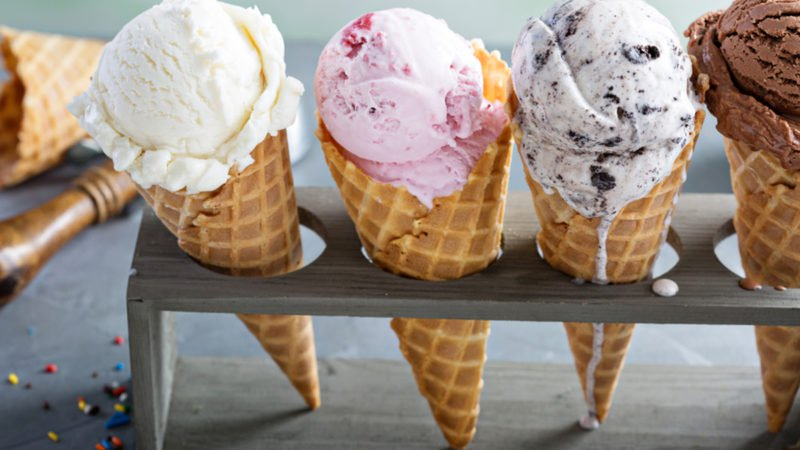

My Top 10 Favorite Foods
By Julia VanPutte
- Spaghetti
Spaghetti is an authentic Italian food with pasta and tomato sauce.

- Whipped Cream
Whipped Cream is basically heaven put into a can.

- Doughnuts
Doughnuts are wonderful. They are circular pieces of fired dough coated in glaze.
- Queso
Queso is like liquid gold. It is melted mexican cheese, and the best queso is from Moes. Usually, people dip corn chips in it.

- Sushi
Sushi is a tradiational Japanese dish with raw fish, rice, and vegetables.

- Bagels
Bagels are boiled and baked bread rings originating in Poland.

- Mac and Cheese
Mac and Cheese is pasta coated in cheese. It is originally an Italian dish. It best when it is homemade.

- Ice Cream
Ice Cream is a frozen dessert. The have many flavors, but my favorite it mint chocolate chip.

- Pizza
Pizza is an Italian bread dish topped with tomato sauce, cheese, and toppings.

- Fried Rice
Fried Rice is a dish of cooked rice that has been stir-fried in a wok or a frying pan and is usually mixed with other ingredients such as eggs, vegetables, seafood, or meat.